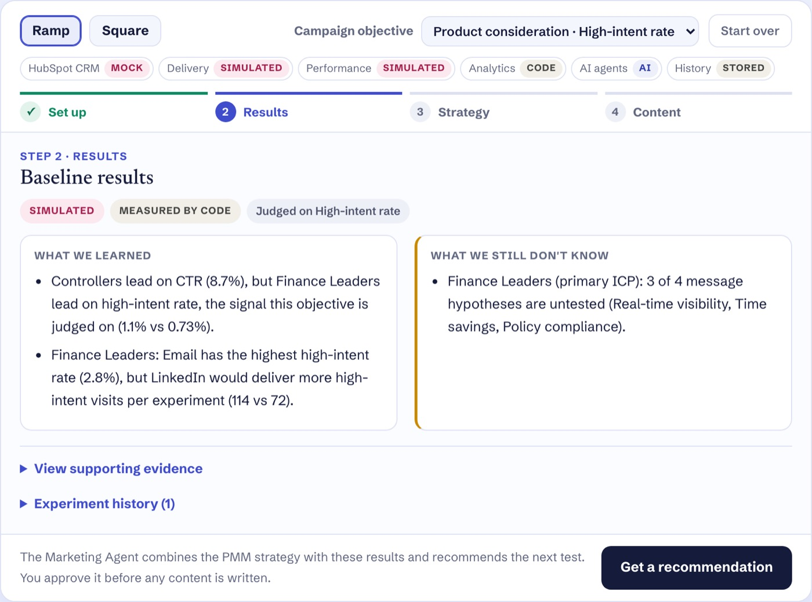
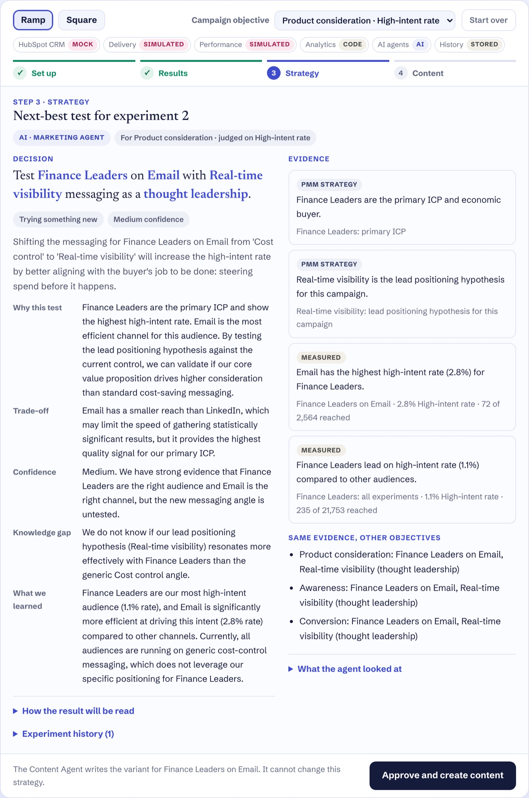
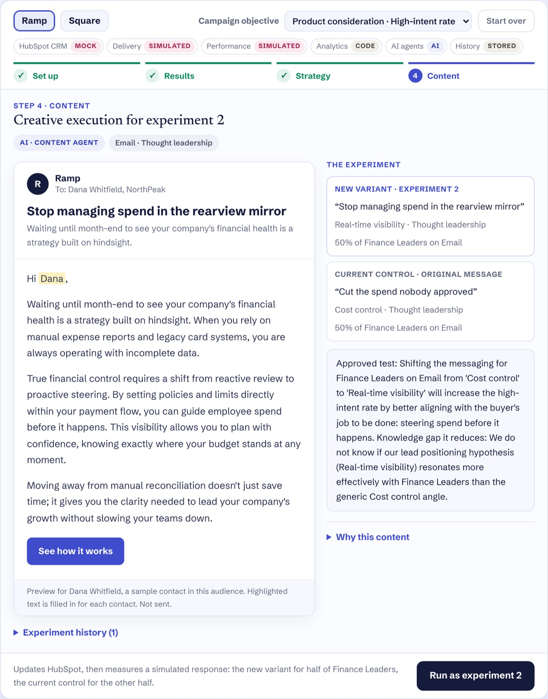
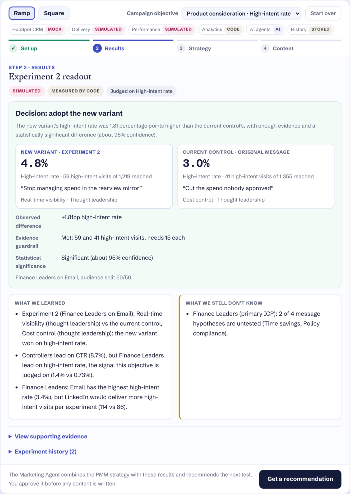
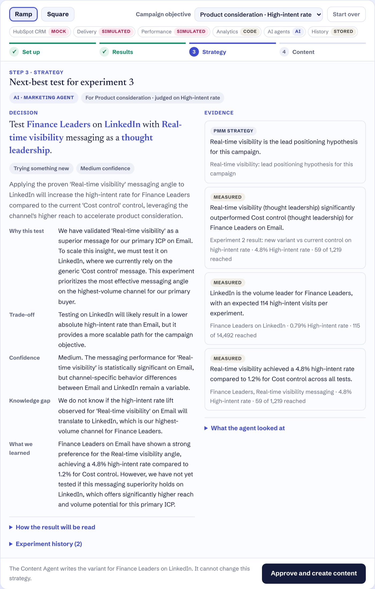

SignalLoop · a product marketing case study by Shiva Goel
Decide what to test next, before generating more content.
SignalLoop combines PMM strategy with campaign evidence to recommend the next audience × channel × message
experiment, then generates content for that approved test.
My rolePMM workflow and decision design · experiment framework · AI system design · implementation (AI-assisted)StatusWorking prototype · HubSpot CRM live · campaign response simulated · strategy inputs are working hypotheses
The problem
AI made content cheap. It didn't make the next experiment obvious.
The harder product marketing question is still open: which audience, message and channel deserve the next
experiment, and why?
Campaign dashboards tell marketers what happened. They rarely tell a PMM:
What was actually learned
Which assumption changed
Which uncertainty matters most
What to test next
My hypothesis
The next decision needs measurement, interpretation, judgment and execution kept apart.
Calculates rates, pools results, compares variants and checks whether the evidence is strong enough.
AI · MARKETING AGENTInterpret
Reads the evidence against the strategy and recommends the test that reduces the most important uncertainty.
PMMApprove
Owns the strategy, checks the reasoning, and approves the test and its content before anything runs.
AI · CONTENT AGENTExecute
Writes the content for the approved test within brand and proof rules. It can't change the strategy.
A hypothesis about PMM work that I'm testing with product marketers, not a validated finding.
How SignalLoop works
Strategy and evidence go in; the learning that comes out shapes the next recommendation.
1PMM strategy + campaign evidencePMMCODE
2Marketing AgentAI
3Next experiment recommendationAI
4PMM approvalPMM
5Content AgentAI
6ExperimentSIMULATED
7MeasurementCODE
↺Learningfeeds the next recommendation
Strategy the PMM sets
Campaign objective and funnel stage
ICP, buying roles and jobs to be done
Positioning, value proposition and product proof
Competitive alternative
Message hypotheses and constraints
Evidence code measures
Audience, channel and message results on the objective's signal
Experiment history, and what each test was meant to learn
Evidence quality: whether a result met the guardrail and is significant
Prior learnings and open questions
Success depends on the objective
A PMM doesn't optimize every campaign for clicks, so SignalLoop doesn't either. Every signal below is simulated.
Objective
Primary signal
What matters most
Awareness
Qualified reach: ICP-fit people who viewed most of the content
Scale within the ICP
Engagement
Engagement rate
Active response to the point of view
Traffic
CTR
Total visits to the content
Product consideration
High-intent rate: visits to product or proof pages
Buying intent from buying roles
Conversion
Conversion rate: demo requests and sign-ups
Proven results with enough evidence
One decision, start to finish
A recorded Ramp session, from baseline to the next recommendation.
One real run of the demo. Response numbers are SIMULATED; recommendations and the email
are AI output from that run, condensed where marked. Strategy inputs are working hypotheses.
Campaign context
Objective
Product consideration, judged on high-intent rate
Primary ICP
Finance Leaders, the economic buyer
Lead positioning hypothesis
Real-time visibility
Evidence available
A simulated baseline: 3 audiences across their channels
1BaselineSIMULATEDCODE
What we knew
Finance Leaders are the primary ICP and real-time visibility is the lead positioning hypothesis. Every audience had only received its default message.
What SignalLoop concluded
Controllers led on CTR (8.7% vs 6.3%), but Finance Leaders led on high-intent rate, the signal this objective is judged on (1.1% vs 0.73%). For Finance Leaders, email had the highest high-intent rate (2.8%), while LinkedIn would deliver more high-intent visits per experiment (114 vs 72). Three of their four message hypotheses were untested.
What changed
Judged on intent rather than clicks, the priority moved from the audience that clicks most to the audience that buys.
Why the next decision followed
The biggest unknown was the message, not the audience or the channel.
2Next-best testAI · MARKETING AGENTPMM APPROVES
What we knew
The baseline findings, plus the strategy: ICP, buying roles, positioning and message hypotheses.
What SignalLoop concluded
Test Finance Leaders × Email × Real-time visibility, keeping the thought leadership format so the result isolates the message. Trade-off: email reaches fewer people than LinkedIn but gives the clearest read on intent from the primary ICP. Medium confidence, because the audience and channel signal is clear but the message is untested. (condensed)
What changed
The knowledge gap became explicit: does the lead positioning message beat category-standard cost control with the buyer?
Why the next decision followed
The result would be read in advance: a significant lift supports scaling the message; no difference moves testing to Time savings.
Same evidence, asked for AwarenessThe same test. Reasoning: email's qualified reach rate (31.2%) makes it the efficient place to test the message first.
Same evidence, asked for ConversionThe same test. Reasoning: email converts far better than LinkedIn (0.9% vs 0.13%), so the evidence guardrail is reachable sooner.
Honest read: in this run the objective changed the reasoning, not the test. For awareness, where scale should
count for more, a PMM could reasonably push back and ask for LinkedIn. That challenge belongs to the PMM, which is why approval
sits with them.
3Creative executionAI · CONTENT AGENTPMM APPROVES
What we knew
The approved test, the buyer's job to be done, the positioning, the competitive alternative and the proof rules.
What SignalLoop concluded
An email that argues for steering spend before it happens, contrasted with expense reports and legacy cards, and no numbers or customer names.
What changed
Only the message. The format stayed thought leadership, and the Content Agent couldn't change the strategy.
R
Ramp
To: Dana Whitfield, NorthPeak (sample contact)
Stop managing spend in the rearview mirror
Waiting until month-end to see your company's financial health is a strategy built on hindsight.
Hi Dana,
Waiting until month-end to see your company's financial health is a strategy built on hindsight. When you rely on
manual expense reports and legacy card systems, you are always operating with incomplete data.
True financial control requires a shift from reactive review to proactive steering. By setting policies and limits
directly within your payment flow, you can guide employee spend before it happens. This visibility allows you to plan
with confidence, knowing exactly where your budget stands at any moment.
Moving away from manual reconciliation doesn't just save time; it gives you the clarity needed to lead your company's
growth without slowing your teams down.
See how it works
AI output as generated. Preview for a sample contact; not sent.
4Performance readoutSIMULATED RESULTCODE
What we knew
Finance Leaders on email, split 50/50: the new variant against the current control, "Cut the spend nobody approved" (cost control, thought leadership).
What SignalLoop concluded
High-intent rate 4.8% (59 of 1,219 reached) vs 3.0% (41 of 1,355): +1.81 points. The evidence guardrail was met (59 and 41 high-intent visits; 15 needed each) and the difference is significant at about 95%. Decision: adopt the new variant.
What changed
Real-time visibility became the control for Finance Leaders on email. CTR rose too (14.8% vs 8.1%), but the decision was made on intent.
Why the next decision followed
One channel doesn't prove a message everywhere, and two message hypotheses were still untested.
5The next recommendation inherits the learningAI · MARKETING AGENT
What we knew
Experiment 2's result, which the agent is required to cite, plus everything before it.
What SignalLoop concluded
Test the same message on LinkedIn, Finance Leaders' highest-volume channel (114 expected high-intent visits per experiment), against LinkedIn's cost-control control. The trade-off is a lower rate than email in exchange for a scalable path. Medium confidence. (condensed)
What changed
The question moved from "which message?" to "does the winning message hold at scale?"
Why the next decision followed
If supported: adopt real-time visibility across Finance Leaders' channels, then test formats such as customer stories. If not: keep cost control on LinkedIn and test whether another format carries the message on social.
One evidence line compared the email result with cost control pooled across all channels (4.8% vs 1.2%), which
isn't like for like. Spotting that is part of the PMM's review.
See this session in the product (5 screenshots)
Baseline simulatedcode

Next-best test AIMarketing Agent

Creative execution AIContent Agent

Readout simulatedcode

Next recommendation AIMarketing Agent

What I designed as the PMM
The system exists because of product marketing decisions, not the other way round.
The PMM workflow
Strategy, evidence, recommendation, approval, content, experiment, learning, in that order.
The context AI needs
Objective, ICP, buying roles, jobs to be done, positioning, proof, competitive alternative and message hypotheses, not just metrics.
Analytics vs judgment
Code calculates every number; the agent only interprets them and has to cite them.
The experiment framework
One audience and channel per test, changing only the message or only the format against the current control, with what would support or reject the hypothesis stated up front.
Segments and message hypotheses
Role-based segments for Ramp, business-stage segments for Square, each with a lead positioning hypothesis to test.
Objective logic
Each objective has its own success signal, so the same evidence can justify a different test.
Evidence requirements
A result is called only when it meets the evidence guardrail and is statistically significant; otherwise SignalLoop says there isn't enough evidence.
Agent responsibilities
The Marketing Agent owns the next-best test. The Content Agent executes it and can't change it.
Human approval boundaries
A PMM approves the recommendation and the content before anything runs.
Simulation safeguards
The agents never see the simulation model, and every simulated number is labeled as simulated.
What should not use AI
Positioning, ICP selection, proof claims, metric calculation and declaring winners stay out of the model's hands.
AI system design
Each part has one job, and the PMM owns the decision.
CODEDeterministic analytics
Measures known facts
Rates on each objective's signal, pooled history, channel leaders, test-versus-control comparisons, the evidence guardrail and significance. The model never calculates these.
AIMarketing Agent
Interprets evidence and chooses the next learning opportunity
Returns a decision with why, the trade-off, confidence, the knowledge gap and how the result will be read. Code rejects a recommendation that doesn't cite both strategy and evidence, or that ignores the last result.
AIContent Agent
Executes against the approved experiment
Plans and writes the variant for the approved audience, channel, message and format, within brand voice and proof rules.
PMMProduct marketer
Controls strategy and approves decisions
Sets the objective, ICP, positioning and message hypotheses, validates assumptions, and approves each recommendation and piece of content.
AI does not replace PMM judgment. It compresses the analysis between evidence and the next decision.
AI should not own
Positioning strategy
Final ICP selection
Which claims and proof can be used
Approving experiments, content and launches
Calculating metrics or declaring winners
AI can own
Reading evidence against the strategy
Weighing trade-offs and naming what is still unknown
Recommending the next test, with its evidence cited
Drafting content inside an approved strategy
Implementation details, for technical reviewers
Architecture
PageStatic case study and demo. Opening the page makes no API calls; only running a step does.
APIVercel Functions for running an experiment, getting or re-running a recommendation, creating content and starting over, with per-visitor rate limits and daily caps.
ModelsGroq (openai/gpt-oss-120b) first, with Gemini (gemini-3.1-flash-lite) as the fallback when Groq is rate-limited or fails.
CRMHubSpot API: fictional contacts, a persona property and one audience list per segment.
StorageUpstash Redis for each visitor's experiment history and the usage limits.
How the agents are constrained
Marketing Agent
Reads strategy and results only through read-only tools
Cites 3 to 6 items: at least one strategy input and one measured metric
Must cite the last experiment's result
The channel must be available to the chosen audience
Each test changes exactly one thing versus the current control: the message or the format
Confidence capped at medium before three experiments
No internal ids in anything a marketer reads
Content Agent
Cannot change the audience, channel, message or format
No numbers or statistics, so no unverifiable claims
Can't reuse a topic already tested with the audience
Personalization by first name only, and only in email
No links or placeholders; the call to action is a button
Output that fails a check is sent back once with the errors, then to the fallback model, and otherwise fails visibly. Unchecked output is never shown.
Evidence and statistics
Each objective is judged on one primary signal, as a rate of the people reached.
Prototype evidence guardrail: at least 30 qualified views or engagements, 20 clicks, 15 high-intent visits or 10 conversions per variant before a difference is judged.
A difference is called only if it also passes a two-proportion z-test at about 95% confidence (|z| ≥ 1.96). Otherwise the result is "no clear difference" or "not enough evidence", and the observed gap is still shown.
The guardrail is a fixed floor, not a power calculation. A production system would size each test in advance from the baseline rate, the minimum detectable effect, the significance level and statistical power.
Simulated response model
Each audience has a hidden response profile by channel, message and format for every signal: email reaches fewer
people with higher intent, social reaches more with lower intent, and repeating a message wears it down. The agents
only ever see measured results, so a good recommendation has to be inferred from evidence.
The decision framework stays consistent; the segmentation logic changes with the market.
Ramp scenario
Role-based segmentation
Spend management involves distinct jobs and buying roles: owning the budget, closing the books and making purchases.
Finance Leaders: economic buyer, primary ICP
Controllers: champion, secondary ICP
Employee Spenders: end users, not buyers
Square scenario
Business-maturity segmentation
An owner-operator often holds every role, so needs shift with the business's stage more than with job title.
New Sellers: secondary ICP
Growing Businesses: primary ICP
Multi-Location Operators: secondary ICP
The segments, ICP, positioning and message hypotheses behind both scenarios are working hypotheses based on
public product information. They are not either company's internal segmentation, research or strategy.
Live demo
Try the decision loop yourself.
Pick a scenario and an objective, then step through the loop. You approve each recommendation and piece of content
before anything runs, and you can change the objective at the recommendation step to see how the same evidence leads to
a different test.
Reviewing as a PMM? I'd value your view on four questions: is this problem painful enough, are these
the right inputs and trade-offs, what evidence would earn your trust, and where would it fit in your workflow?
Every response signal is simulated and nothing is sent. HubSpot audience updates are live. Analytics
run in code; the recommendations and content are AI. The Ramp and Square strategy inputs are working hypotheses.
What is real vs simulated
Simulation runs the workflow. It isn't a business result.
REAL INTEGRATIONHubSpot API creates fictional contacts and audience lists.
PMM CONTEXTStrategy inputs are working hypotheses based on public product information.
DETERMINISTIC CODERates, pooling, comparisons, the evidence guardrail and significance.
AI-GENERATEDMarketing Agent recommendations and Content Agent output.
SIMULATEDDelivery, and every response signal: reach, engagement, clicks, high-intent visits and conversions.
Simulation lets the full decision loop run without presenting fictional performance as a business result.
Before production
Four things production would require.
Real signalsCampaign, web analytics, CRM and pipeline data in place of the simulator.
Real experiment designSample sizes set in advance from the baseline rate, minimum detectable effect, significance level and power, replacing the prototype's fixed guardrail.
GovernanceApproval roles, claims review, privacy, and ongoing evaluation of agent quality.
Validated strategyICP, positioning and message hypotheses from real research, and optimization toward pipeline and revenue.
What I still need to validate
The assumptions that need product marketers, not more code.
I haven't interviewed PMMs about SignalLoop yet, so nothing here is presented as a finding. Before production, these
assumptions need testing:
The problem: PMMs struggle more with deciding what to test next than with producing content.
The inputs: these strategy inputs are the ones PMMs actually use, and teams can keep them current.
Trust: what evidence a PMM needs before acting on an AI recommendation, and whether cited strategy plus metrics is enough.
The signals: objective-specific signals match how marketing teams judge and report campaigns.
The workflow: where approval belongs when PMM, demand generation and content teams share a campaign.
The scenarios: whether the Ramp and Square working hypotheses resemble real buying committees and segments.
The takeaway
SignalLoop reflects how I approach AI-enabled product marketing.
Start from the decision that matters, not the content to produce.
Give AI the strategy, not just the metrics.
Judge each campaign on the signal its objective needs.
Let code measure and AI interpret, and keep a PMM accountable for the call.